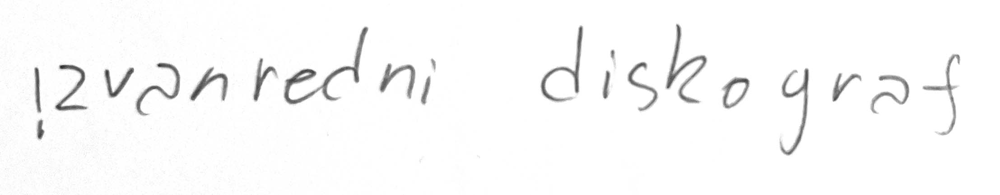
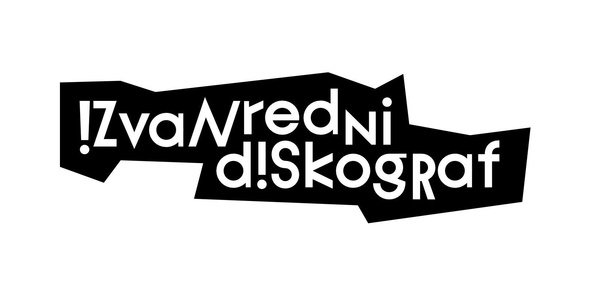
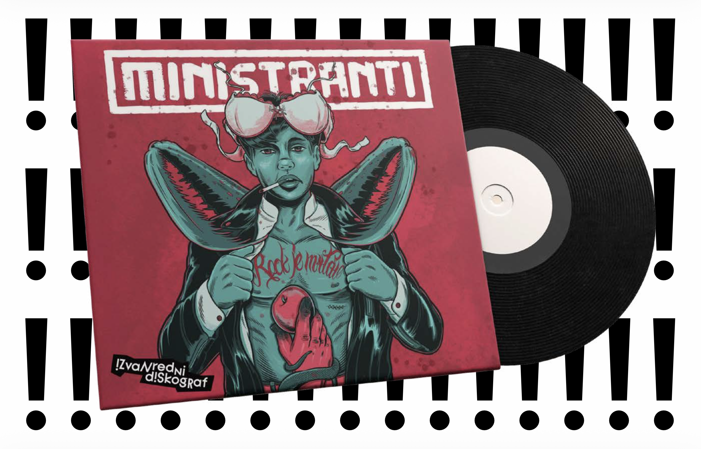
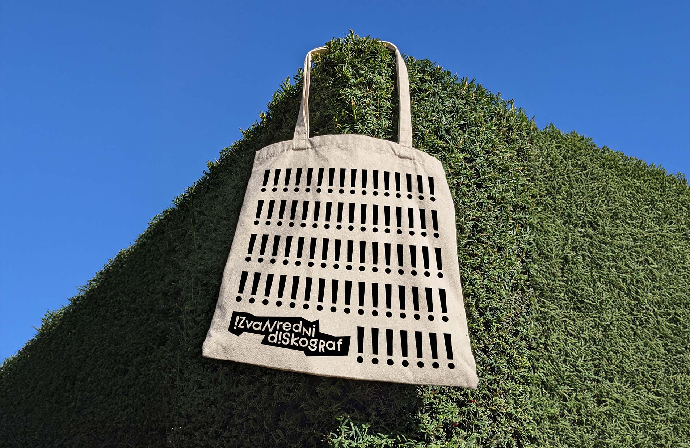
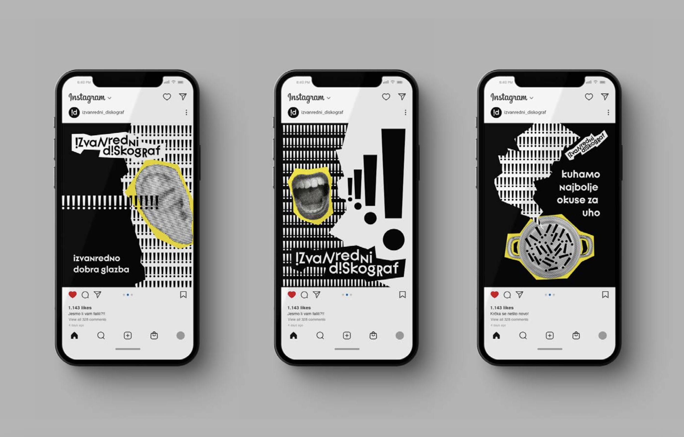
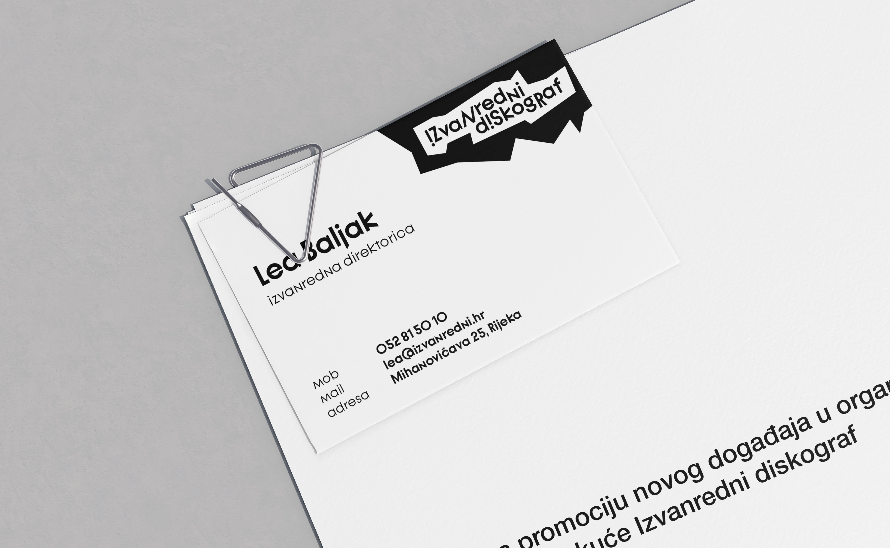
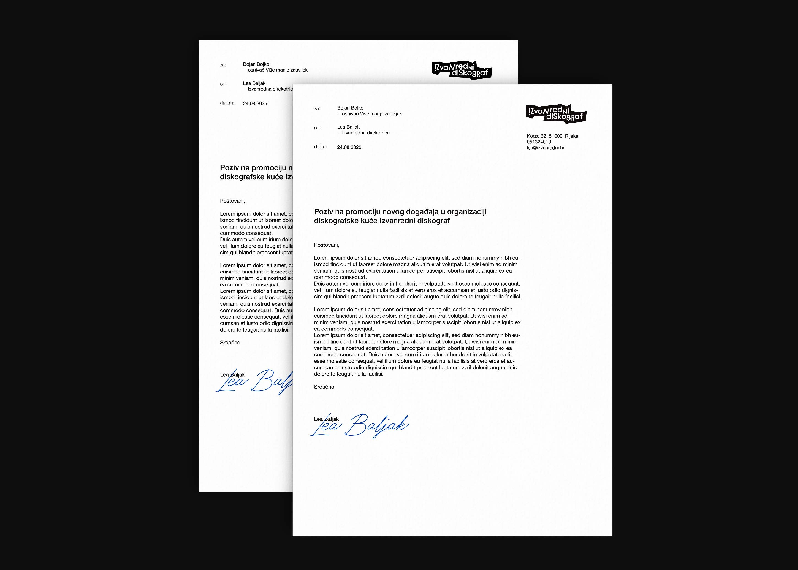

Izvanredni diskograf je mala riječka diskografska kuća nastala iz serije online koncerata u izvanrednim uvjetima. Vizualni identitet polazi od te ideje izvanrednosti – inspiriran je znakovljem hitnih situacija te principom kolaža, kao spajanja postojećih elemenata u novu vrijednost, što reflektira i programski pristup kuće. Ponavljajući uskličnik funkcionira kao uzorak i ritmička referenca na glazbu. Estetika „hype stickera“ koristi se kao fleksibilno rješenje označavanja, omogućujući naknadnu aplikaciju identiteta na već izdane albume.


Omot album je oblikovan prije nego što je postojao vizualni identitet, te se naljepnica loga printa i lijepi naknadno na omot albuma.



